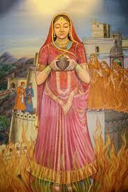
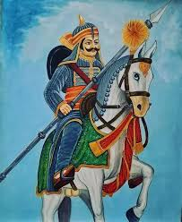
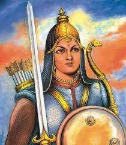
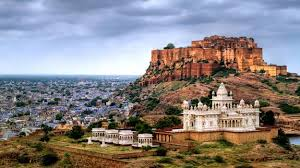

Welcome to Chronicles Histo
Chronicles Histo" is your one-stop destination to explore the glorious history of Rajputana. Dive into the tales of bravery, honor, and resilience of the Rajput warriors who shaped India's heritage.
This website is dedicated to preserving and sharing the rich cultural legacy of the Rajputs, featuring:
- Legendary warriors like Maharana Pratap, Rana Sanga, and Prithviraj Chauhan.
- Historical forts and palaces that stand as symbols of architectural brilliance.
- Vibrant festivals, cuisine, and traditional attire of Rajputana.
Explore, learn, and immerse yourself in the majestic history of the Rajputs through our curated content.
"The history of the world is but the biography of great men." – Thomas Carlyle
Rajputs: Guardians of Valor and Heritage
The Rajputs, meaning "Sons of Kings," are a prominent warrior class of India, renowned for their bravery, chivalry, and sense of honor. Emerging around the 6th century, the Rajputs played a pivotal role in shaping the history of medieval India, ruling over various kingdoms and fiercely protecting their land, culture, and people.
Key Attributes
- Courage and Bravery: Rajputs are celebrated for their unmatched valor on the battlefield. They upheld the warrior code of dharma, fighting to protect their honor and motherland.
- Loyalty: Their deep sense of loyalty extended to their kings, clans, and the sacred traditions of Rajputana.
- Chivalry: Rajput warriors followed strict codes of conduct, showing respect to women and their adversaries.
Cultural Contributions
- Architecture: Majestic forts like Chittorgarh, Mehrangarh, and Amer are symbols of their architectural brilliance and military strength.
- Art and Literature: Rajput courts flourished with art, music, and poetry, often depicting themes of heroism and romance.
- Festivals and Traditions: Rajputs take pride in their rich heritage, celebrating festivals like Teej and Gangaur that showcase their culture and traditions.
Famous Rajput Warriors
-

- Maharana Pratap: Known for his resistance against the Mughal emperor Akbar, Maharana Pratap remains a symbol of Rajput pride.
- Prithviraj Chauhan: A legendary ruler of the Chahamana dynasty, famous for his battles against Muhammad Ghori.
- Rani Padmini: Renowned for her beauty and bravery, she is remembered for her act of jauhar to protect her dignity.
The legacy of the Rajputs is not just in their historical battles but also in the enduring cultural traditions and architectural marvels they have left behind. They continue to inspire pride and respect among Indians and history enthusiasts worldwide.
Warriors: The Legends of Rajputana
The history of the Rajputs is filled with tales of legendary warriors who stood firm in the face of invaders, fought to protect their land, and left behind a legacy of bravery and sacrifice. These warriors are remembered not just for their skills in battle, but for their adherence to honor, integrity, and their commitment to justice.
Notable Rajput Warriors
Maharana Pratap
Maharana Pratap is perhaps the most iconic warrior in Rajput history. Born in 1540, he is best known for his unwavering resistance against the Mughal Empire, particularly his famous battle at Haldighati in 1576. Despite being outnumbered, Maharana Pratap fought valiantly to protect his kingdom, Mewar, from the Mughal forces. His commitment to his people and land makes him a symbol of Rajput pride.
Prithviraj Chauhan
Prithviraj Chauhan, a member of the Chahamana dynasty, was another celebrated warrior. Known for his courage and wisdom, Prithviraj played a crucial role in defending India from invasions. His battles against the Ghurid ruler Muhammad Ghori are among the most notable in Indian history. His tale of valor and sacrifice continues to inspire generations.
Rana Sanga
Rana Sanga, the ruler of Mewar, is remembered for his battles against the Mughal Empire, particularly his confrontation with Babur at the Battle of Khanwa in 1527. Although defeated, Rana Sanga's courage and leadership in battle left an indelible mark in Rajput history. His reputation as a formidable warrior and his dedication to the Rajput cause has earned him a revered place in history.
Rani Durgavati
Rani Durgavati, the queen of Gondwana, was a formidable warrior who fiercely defended her kingdom against the Mughal invasion led by Emperor Akbar’s forces. Known for her valor and leadership, she fought until her last breath, embodying the spirit of Rajput resistance and honor.
Legacy of the Rajput Warriors
The legacy of the Rajput warriors is not confined to their historical battles. Their bravery, commitment to justice, and respect for their culture continue to inspire people today. Their stories are passed down through generations, immortalized in ballads, poetry, and historical texts.
From the battlefields of Rajasthan to the pages of history, Rajput warriors have carved out a legacy that continues to echo in the hearts of millions. Their sacrifices for the honor of their land and people remind us of the true meaning of valor.
Forts and Palaces of the Rajputs
The Rajputs built some of the most majestic and impregnable forts and palaces in India. These structures not only served as military fortifications but were also symbols of Rajput pride and architectural brilliance. Strategically placed on hills and deserts, these forts were designed to withstand sieges and are now iconic landmarks that tell the tales of valor, power, and royal life.
Famous Forts
Mehrangarh Fort: Located in Jodhpur, Rajasthan, Mehrangarh Fort is one of the largest forts in India. It is renowned for its massive walls, exquisite architecture, and rich history, offering breathtaking views of the Blue City.
Chittorgarh Fort: A UNESCO World Heritage site, Chittorgarh Fort is famous for its historical significance. This fort is the site of numerous battles and sacrifices, with legends of valor like the Siege of Chittorgarh where the Rajput queens chose Jauhar (self-immolation) to avoid capture.
Amber Fort: Located near Jaipur, Amber Fort blends both Hindu and Mughal architectural styles. It is known for its grand palaces, stunning courtyards, and intricate frescoes. The fort is a favorite among tourists, offering a glimpse into the grandeur of Rajput life.
Palaces
Udaipur’s City Palace: A beautiful example of Rajasthani architecture, the City Palace in Udaipur is a sprawling complex with over 400 rooms. Overlooking Lake Pichola, it is a blend of Mughal and Rajput styles with intricate carvings and beautiful gardens.
Jaisalmer Fort Palace: The Jaisalmer Fort is not only a fort but a living city. It houses palaces and temples, and the palaces inside are adorned with beautiful carvings and sculptures. Known for its golden sandstone structure, it is often called the Golden Fort.
Rambagh Palace: Located in Jaipur, Rambagh Palace was originally the residence of the Maharaja of Jaipur. Today, it is a luxury hotel that offers a royal experience to its guests. The palace is known for its lavish interiors, serene gardens, and royal charm.
These forts and palaces are not just architectural marvels but also embody the rich history and culture of the Rajputana rulers. Many of these historical sites today attract visitors from all around the world who come to witness the grandeur and learn about the valiant Rajput legacy.
Culture of the Rajputs
The culture of the Rajputs is a unique blend of various traditions, values, and customs that evolved over centuries. The Rajputs, known for their bravery, honor, and martial prowess, have a rich cultural heritage that is deeply rooted in their history. Their culture encompasses art, architecture, dance, music, festivals, and clothing, which continue to be celebrated and passed down through generations.
Traditional Attire
The traditional attire of the Rajputs is both elegant and functional, reflecting their noble status. Men typically wore dhoti or kurta, along with a safaa (turban) that signified their rank. Women wore beautiful ghagras (skirts) with ornate cholis (blouses) and odhnis (scarves), often made from fine fabrics like silk and embellished with embroidery and mirrors.

Dance and Music
Rajput culture has a rich tradition of dance and music that played an important role in royal courts and religious ceremonies. The most popular traditional dance forms include Ghoomar and Kalbeliya, both of which are performed by women and are known for their graceful movements and vibrant costumes. Rajput music, especially folk music, is centered around themes of love, valor, and devotion. The Ragas and Bhajans in folk music reflect the deep connection of the Rajputs to spirituality and the valorous tales of their ancestors.
Festivals
The Rajputs celebrate a variety of festivals with great enthusiasm. Gangaur is a festival dedicated to Goddess Parvati, where women celebrate their marital bliss and pray for a long, prosperous life. Teej is another important festival for Rajput women, celebrating the arrival of monsoon and praying for the well-being of their husbands. Diwali and Holi are widely celebrated, as well as regional festivals that highlight the unique cultural aspects of Rajasthan.
Rajput Art and Architecture
Rajput art and architecture reflect the grandeur and opulence of their royal heritage. The Rajputs were skilled in creating intricate frescoes, miniatures, and sculptures. Rajput architecture, seen in the design of their palaces, forts, and temples, is a combination of Hindu, Mughal, and Jain styles. Famous examples include the Hawa Mahal in Jaipur, Lake Palace in Udaipur, and the stunning Ranakpur Temples.
Values and Social Structure
Rajput culture places great emphasis on honor, courage, and loyalty. These values are enshrined in their social structure, where the Rajput clan system governs relationships and societal obligations. Rajputs are known for their adherence to the code of chivalry, which dictates bravery in battle, respect for women, and loyalty to their land and ruler. This valorous spirit has been immortalized in folklore and history.
In conclusion, the Rajput culture is an epitome of strength, elegance, and pride. It has deeply influenced the history and identity of Rajasthan and continues to inspire people to this day.
Legacy of the Rajputs
The legacy of the Rajputs is one of valor, honor, and resilience. For centuries, the Rajput clans have played a significant role in the history of India, particularly in the regions of Rajasthan. Their legacy is not only marked by their military prowess but also by their contributions to art, culture, architecture, and the preservation of Indian heritage.
Heroic Battles and Warriors
The Rajputs are renowned for their bravery in battles and their commitment to defending their land and culture. Their legacy is built upon the stories of legendary warriors like Maharana Pratap, who fought against the Mughal emperor Akbar, and Rana Sanga, who resisted foreign invasions. Their courage and strategic brilliance continue to inspire generations of people. The Rajput spirit is also embodied in figures like Prithviraj Chauhan, who valiantly defended his kingdom, and Rani Durgavati, who fought against the Mughal forces to protect her people.
Architectural Grandeur
The Rajput legacy is immortalized in the stunning forts, palaces, and temples they constructed across Rajasthan. These architectural wonders, such as the Mehrangarh Fort in Jodhpur, Amber Fort in Jaipur, and the Chittorgarh Fort, are not just marvels of construction but also a testament to the Rajput’s sense of beauty, strategy, and military defense. These forts continue to stand as symbols of Rajput valor and their lasting contribution to Indian heritage.
Patrons of Art and Culture
The Rajputs were also great patrons of the arts. Their courts were centers of music, literature, and visual arts. Rajput miniature paintings, which depict scenes of court life, battles, and religious themes, remain among the most beautiful and intricate forms of Indian art. Additionally, they supported the development of classical music and dance, as well as the preservation of ancient texts and manuscripts. The Rajputs' support for cultural and intellectual endeavors laid the foundation for a vibrant artistic legacy that continues to influence modern Indian culture.
Preservation of Indian Traditions
The Rajputs were deeply committed to preserving India’s ancient traditions, including the valorization of Hinduism, the Sanskrit language, and local customs. They stood as protectors of the Hindu faith during times of foreign invasions, ensuring the survival of cultural practices, religious traditions, and historical narratives. Their commitment to protecting these traditions and fostering a sense of community among their people has left an enduring legacy of cultural pride and resilience.
The Rajput Pride
The Rajputs have always been proud of their heritage and their contributions to the history of India. Their legacy is not just about wars and battles but also about the values of honor, loyalty, and duty. The tales of Rajput kings and queens, their valor, and their sacrifices continue to be celebrated in folklore, literature, and the collective memory of the people of Rajasthan and India. Today, their legacy lives on in the pride and cultural identity of the Rajput communities, as well as in the recognition of their role in shaping Indian history.
In conclusion, the legacy of the Rajputs is a blend of bravery, culture, and wisdom that continues to inspire and shape the fabric of Indian society. The Rajputs' contributions to art, architecture, warfare, and the preservation of Indian traditions have left an indelible mark on history.